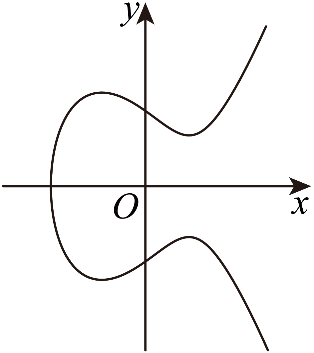

示例学校高二数学周测（5） Q10
题目
10．设计一个实用的门把手，其造型可以看作图中的曲线C:y^2=x^3-2x+2的一部分，则（ ）

A．点(1,1)在C上B．将C在x轴上方的部分看作函数f(x)的图象，则1是f(x)的极小值点
C．C在点(1,1)处的切线与C的另一个交点的横、纵坐标均为有理数
D．x<0时，曲线C上任意一点到坐标原点O的距离均大于sqrt(2)
答案与解析
10．ACD将(1,1)代入C的方程，等式成立，故A正确；对于C在x轴上方的部分，可知函数f(x)=sqrt(x^3-2x+2)，则f^'(x)=(1)/(2)(x^3-2x+2)^-(1)/(2)(3x^2-2)，因为f^'(1)=(1)/(2)≠0，故B错误；过点(1,1)作C的切线，由B知其斜率为(1)/(2)，故其方程为y=(1)/(2)x+(1)/(2)，将其与C的方程联立{y=(1)/(2)x+(1)/(2)y^2=x^3-2x+2得(x)^2(x+(7)/(4))=0，故切线与C的交点的坐标(-(7)/(4),-(3)/(8))，横，纵坐标均为有理数，故C正确；设(x_0,y_0),x_0<0，则其到坐标原点O的距离为sqrt(x_0^2+y_0^2)=sqrt(x_0^3+x_0^2-2x_0+2)，要使该距离大于sqrt(2)，只需要x_0^3+x_0^2-2x_0>0，整理得x_0(x_0^2+x_0-2)=x_0(x_0+2)⋅(x_0-1)，易知当x_0=-2时，y_0不存在，可知x_0>-2⇒x_0+2>0，又因为x_0(x_0-1)>0，故x_0(x_0+2)(x_0-1)>0，故x_0^3+x_0^2-2x_0>0成立，故D正确.
结构化摘要
{
"question_id": "szzx2024g2week5_q010",
"answer": "ACD",
"assets": [
{
"id": "img001",
"type": "image",
"rel_id": "rId12",
"source": "word/media/image6.png",
"path": "assets/szzx2024g2week5_q010_image_01.png"
}
],
"ole_objects": [],
"extraction": {
"source_paragraph_range": [
24,
29
],
"solution_paragraph_range": [
14,
14
],
"formula_count": 37,
"image_count": 1,
"ole_count": 0,
"quality_flags": [
"contains_images",
"contains_omml"
]
}
}